Tahoe Rim Trail
A full ring around the largest alpine lake in North America.
There are 265 km between the two ends of the Tahoe Rim Trail, and Tahoe City (loop close) is the far one. You begin at Tahoe City. Watch Walks moves you along it with the steps you already take, so it's about 11 weeks at 5,000 steps a day. Here are its 18 landmarks, in the order you meet them, photographed and written up.
- 265km end to end
- 18landmarks
- 11 weeksat 5,000 steps a day
- Tahoe City (loop close)finishes at

The landmarks of Tahoe Rim Trail
18 landmarks, in walking order. Each photograph is by the person credited beneath it, used as they licensed it.
-
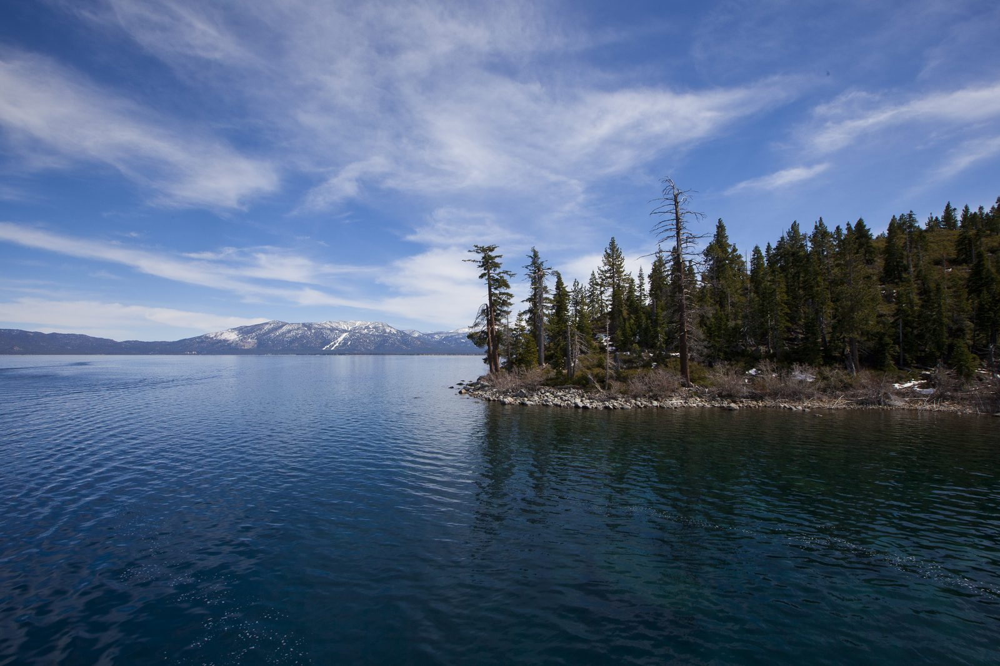
Photo: Lara Farhadi · Wikipedia, CC BY 2.0 Tahoe City
Fanny Bridge marks the beginning, where the Truckee River spills through Lake Tahoe's only outlet and slides north toward the Nevada desert. Two hundred and sixty-five kilometers of ridgeline form a full circle around the largest alpine lake in North America. The loop runs clockwise, the blue water held constantly to the west.
-
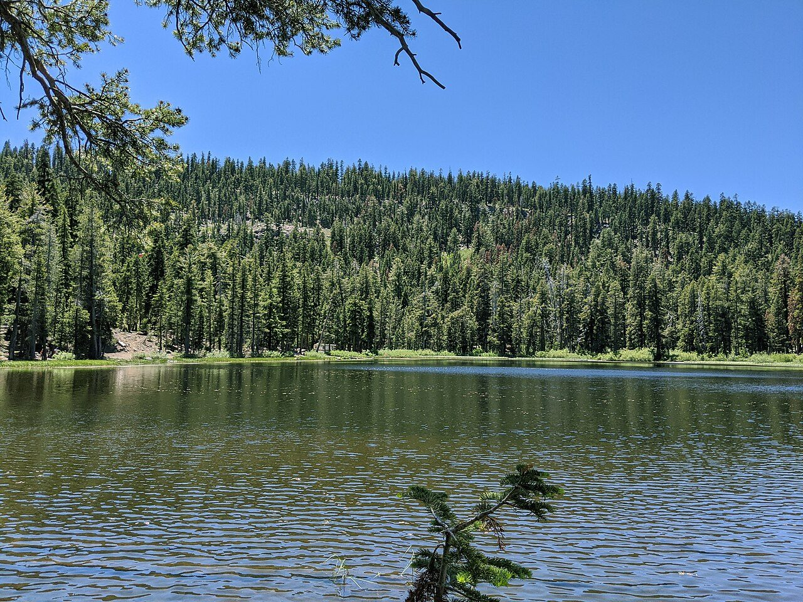
Photo: Dicklyon · Wikimedia Commons, CC BY-SA 4.0 Watson Lake
Reeds ring this small forest tarn, a quiet pocket reached after the long grind up out of town. Lodgepole pines crowd the shore and the water sits still enough to hold their reflection. Few walkers push this far into the trail's northern reach; the solitude here is the reward for the early climb.
-
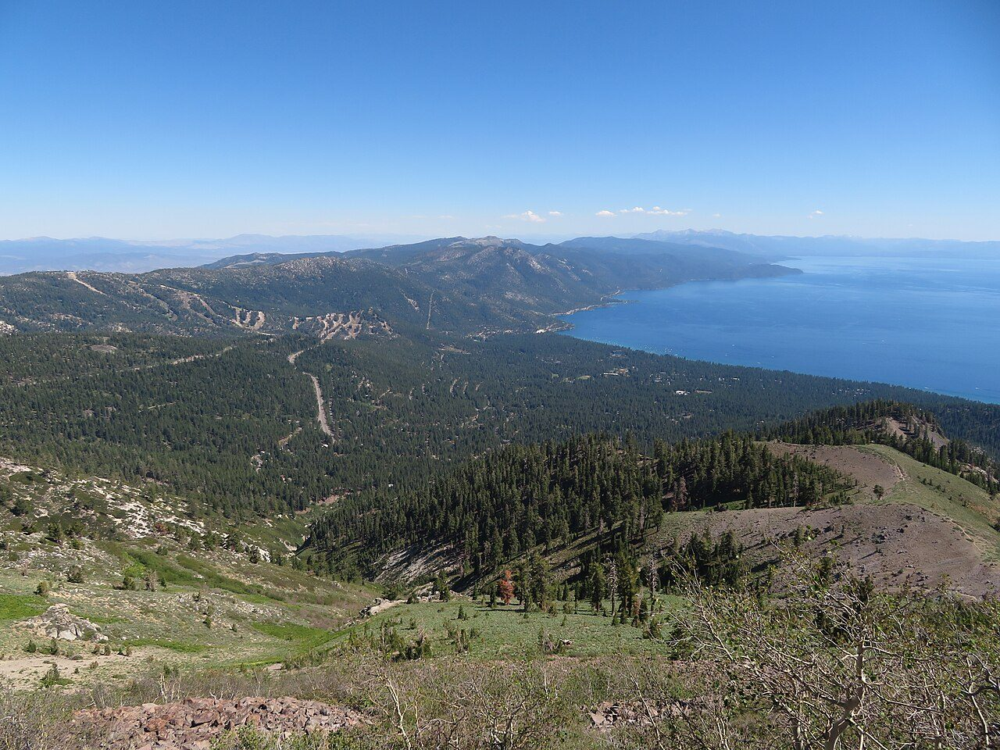
Photo: Ken Lund from Reno, Nevada, USA · Wikimedia Commons, CC BY-SA 2.0 Brockway Summit
A highway crossing breaks the forest near 7,200 feet, the last easy road for a long while. Beyond it the trail tips upward into volcanic country, andesite ridges left by ancient eruptions. The wildest and highest stretch of the whole circuit begins on the far side of the pavement, climbing toward the Mount Rose high country.
-
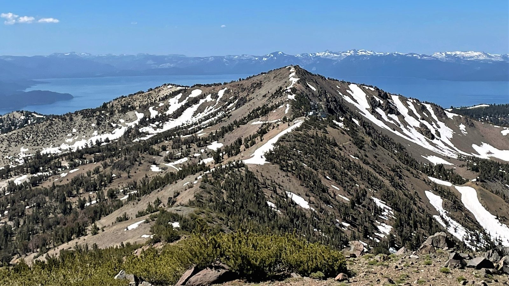
Photo: Mitch Barrie · Wikipedia, CC BY-SA 2.0 Relay Peak
At 10,338 feet this is the roof of the loop, the highest point the trail itself ever touches. Mount Rose looms just to the north, and below, the entire indigo bowl of Tahoe spreads to the horizon. Communications towers give the peak its name. From here the route eases into long ridgeline and gentle descent toward the meadows.
-
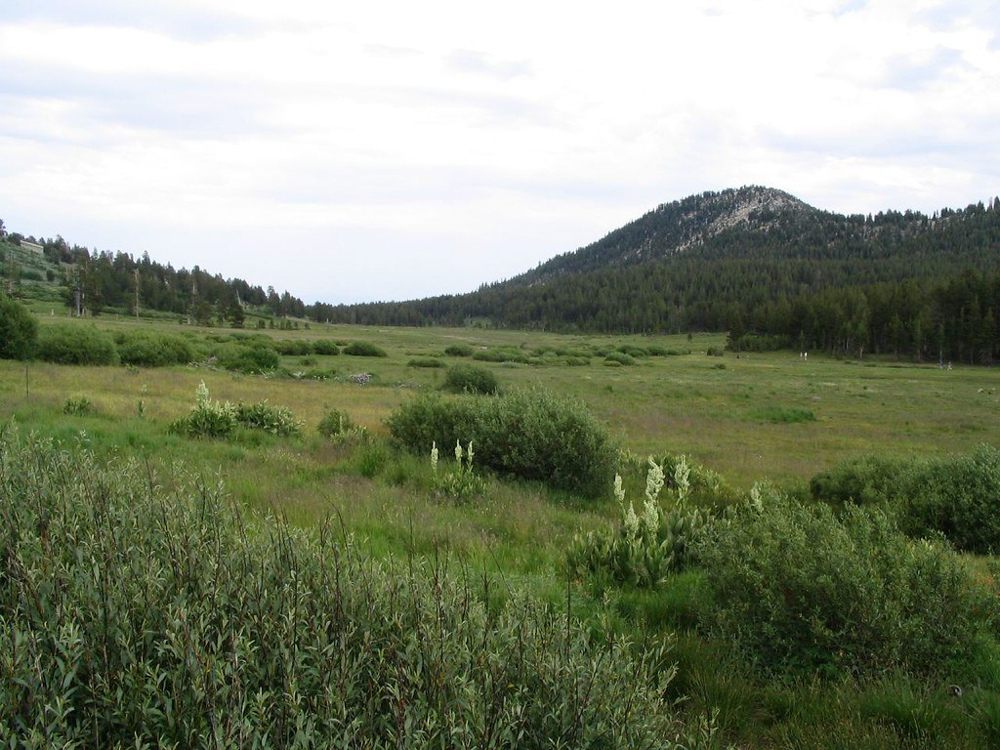
Photo: Ken Lund · Flickr via Openverse, CC BY-SA 2.0 Tahoe Meadows
Wildflowers flood these subalpine meadows in July, corn lily and lupine and paintbrush filling the wet green swales. After the exposed heights of Relay Peak the softness comes as relief. Boardwalks thread the fragile ground. This is the busiest trailhead on the whole route, and for a mile or two the path fills with day walkers.
-
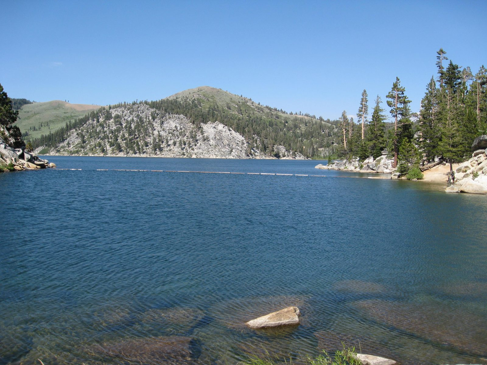
Photo: Flickr user dhReno · Wikipedia, CC BY-SA 2.0 Marlette Lake
Deep blue and man-made, this reservoir once fed a wooden flume that carried water miles down to the silver mines of the Comstock and Virginia City. Ospreys hunt the surface. The east-shore ridge rising above holds some of the finest lake views of the entire trail, the Carson Range falling away to the high desert beyond.
-
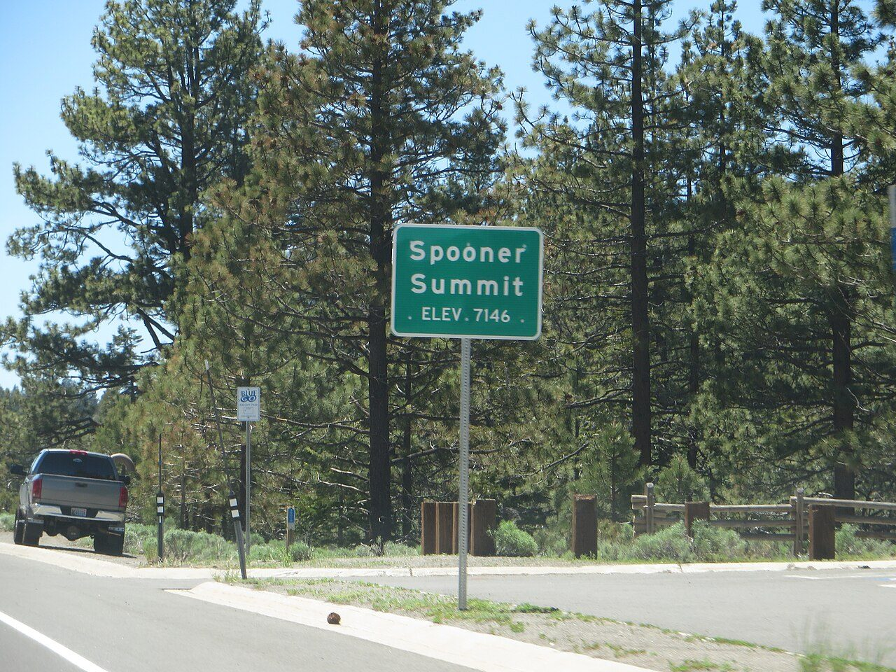
Photo: Ken Lund · Wikimedia Commons, CC BY-SA 2.0 Spooner Summit
Highway 50 slices through at Spooner, a low saddle on the crest of the Carson Range. It serves as a common resupply and a natural halfway marker along the eastern shore. Jeffrey pines scent the warm air with butterscotch. Beyond the asphalt the trail climbs back into the trees toward the long open shoulder of South Camp Peak.
-
South Camp Peak
A broad, flat summit ridge opens without warning into one of the great overlooks of the lake, a mile-long balcony near 8,900 feet. The whole western Sierra crest, snow-streaked into summer, rises across twelve miles of open water. Many walkers call this the single finest view on the entire loop.
-
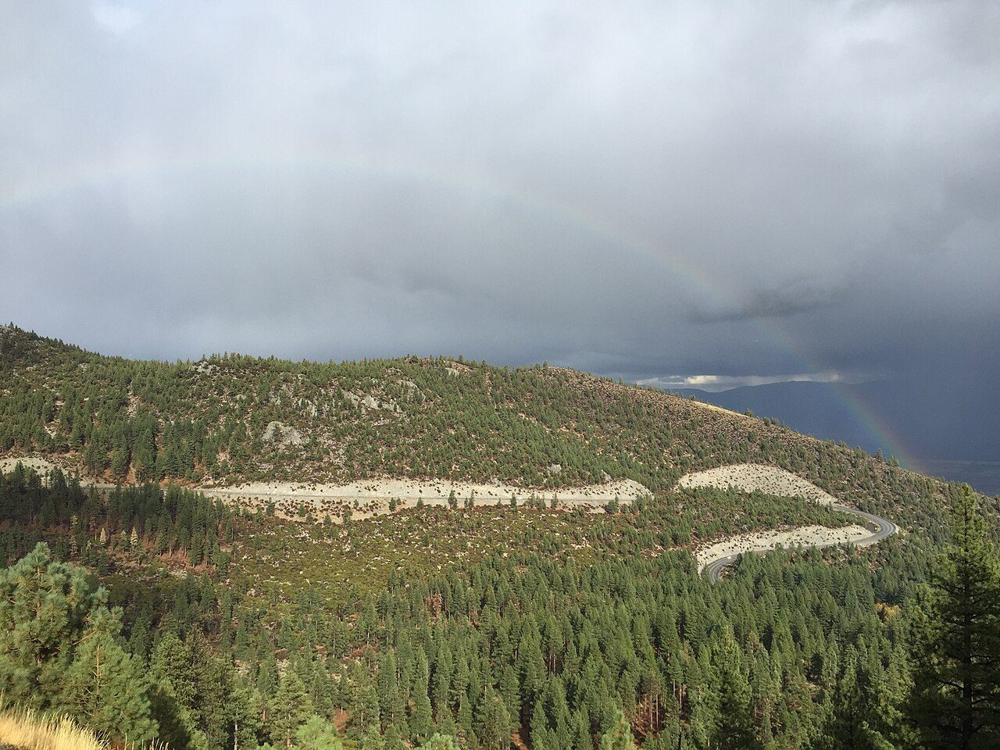
Photo: Famartin · Wikimedia Commons, CC BY-SA 4.0 Kingsbury Grade
The path dips to Kingsbury, where a mountain road climbs from the Carson Valley and a ski resort's lifts hang silent in the summer heat. It makes an easy bail-out and a place to trade stories with south-shore hikers. Ahead lies the highest country of all, the Freel massif looming to the south.
-
Star Lake
Cradled near 9,100 feet beneath the raw talus of Jobs Sister, this is the highest lake in the entire Tahoe Basin. Ice can cling to its edges into June. Granite and scree wrap the shoreline, and the camping here is spare and spectacular. Freel Peak's bulk rises directly overhead, a standing invitation to the summit off-route.
-
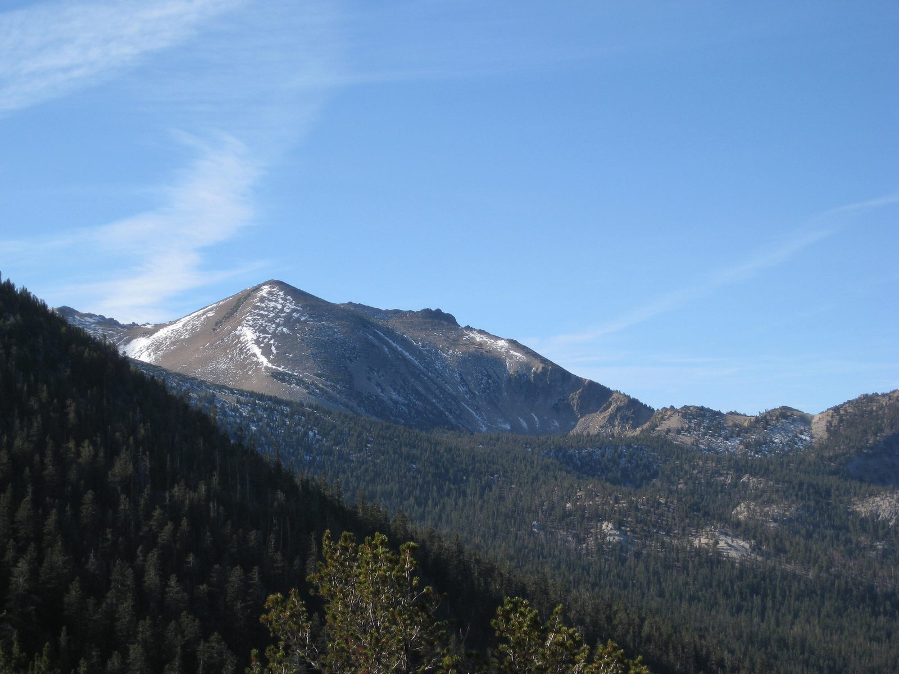
Photo: J Brew · Wikipedia, CC BY-SA 2.0 Freel Peak
A steep spur leaves the loop and grinds up loose decomposed granite to 10,881 feet, the highest summit in the whole Tahoe Basin. From the top the lake, the Carson Valley, and the far white spine of the Sierra all lie open at once. It is optional, off the main circuit, and utterly worth the extra sweat.
-
Big Meadow
Down from the heights, the trail spills into a broad grassy basin near Luther Pass, threaded by a cold creek. Grass Lake and Round Lake lie close by, and the walking turns gentle again. It makes a sheltered, welcome camp after the granite of Freel, the last soft ground before the long climb to Echo Summit.
-
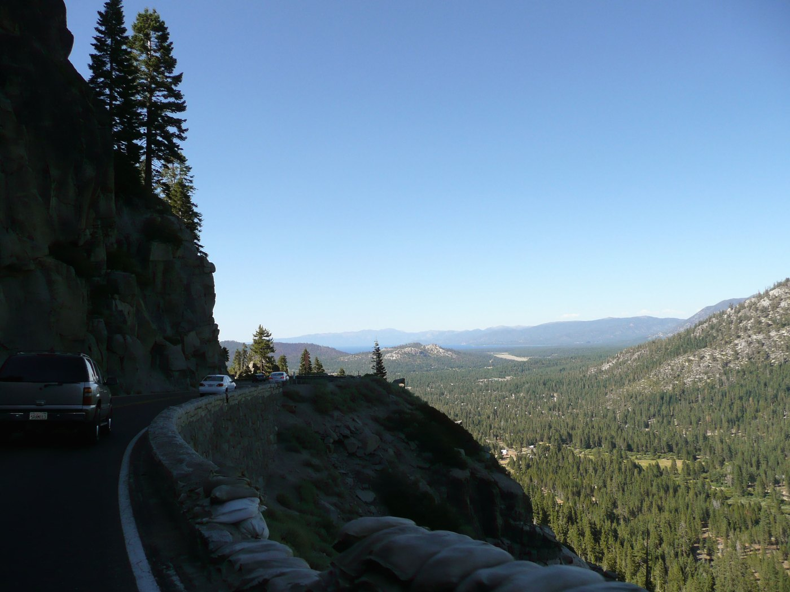
Photo: Unknown · Wikipedia, CC BY Echo Summit
Highway 50 crosses again at Echo Summit, at 7,377 feet the highest point on U.S. 50 in California and the doorway to the wildest wilderness of the loop. Ahead the granite lakes of Desolation wait. The pavement climbs into the pale Sierra batholith, where forest gives way to bare white rock and cold blue tarns.
-
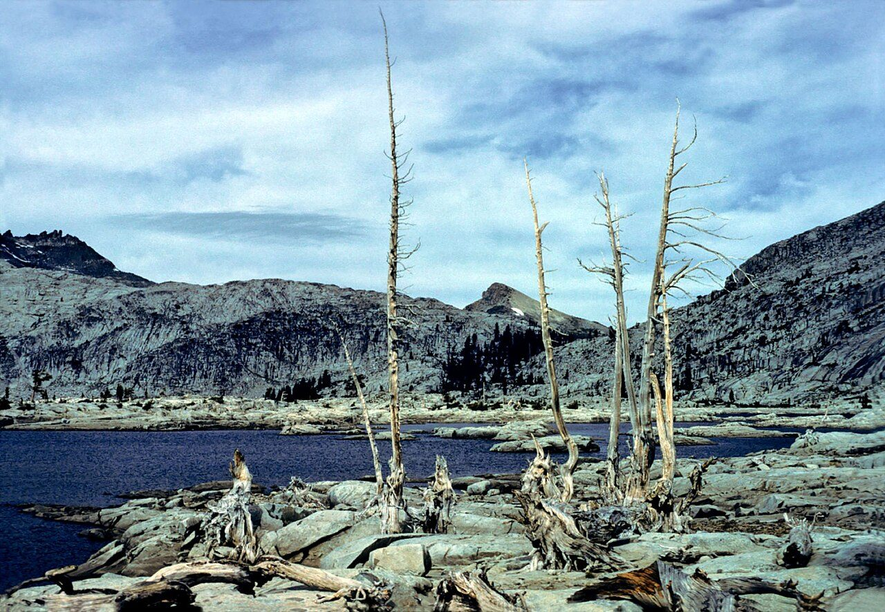
Photo: Rappensuncle · Wikimedia Commons, CC BY-SA 2.0 Lake Aloha
Bare granite slabs and hundreds of rocky islets break the shallow surface of this dammed lake, the stony heart of the Desolation Wilderness. Pyramid Peak stands guard to the west. The world here is stone and water and sky, scoured clean by ancient glaciers. Snowmelt keeps the tarns brutally cold even deep into August.
-
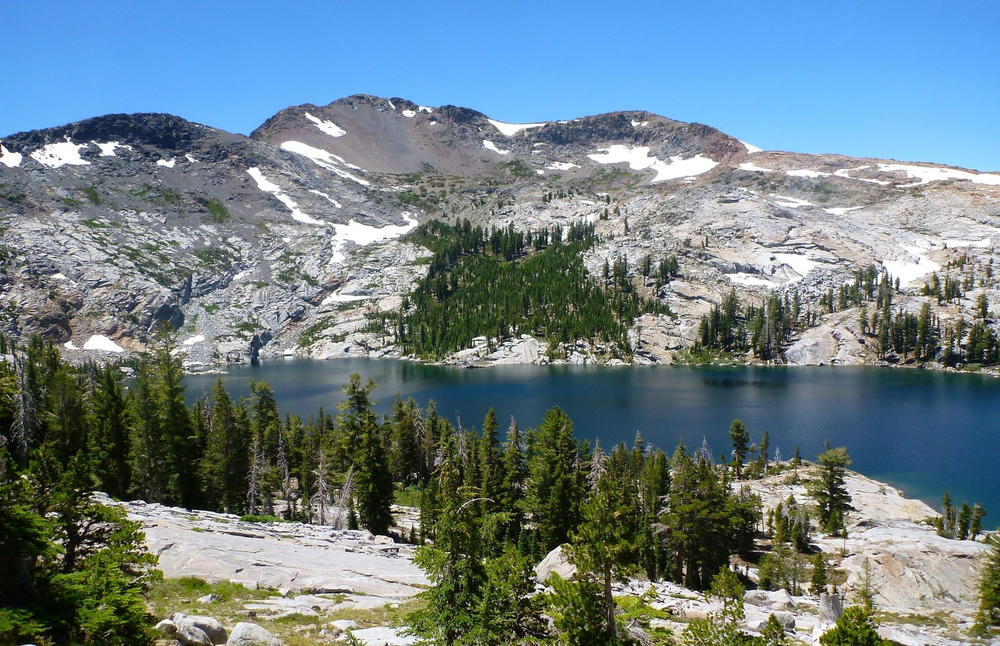
Photo: Rick McCharles · Wikipedia, CC BY 2.0 Dicks Pass
Near 9,380 feet, this saddle is the high point of the Desolation crossing, and here the Rim Trail runs shared with the Pacific Crest Trail. Snow lingers on the north side long into summer. Dicks Lake and Fontanillis Lake glint below, and thru-hikers bound for Canada pass the other way. Wilderness permits are required through this stretch.
-
Barker Pass
Here the Pacific Crest Trail peels away north toward Oregon while the Rim Trail bends back toward the lake for home. A dirt road crosses the crest near 7,650 feet. Granite gives way once more to volcanic soil and forest. From this point the loop is truly closing, every step now curving back toward the water where it began.
-
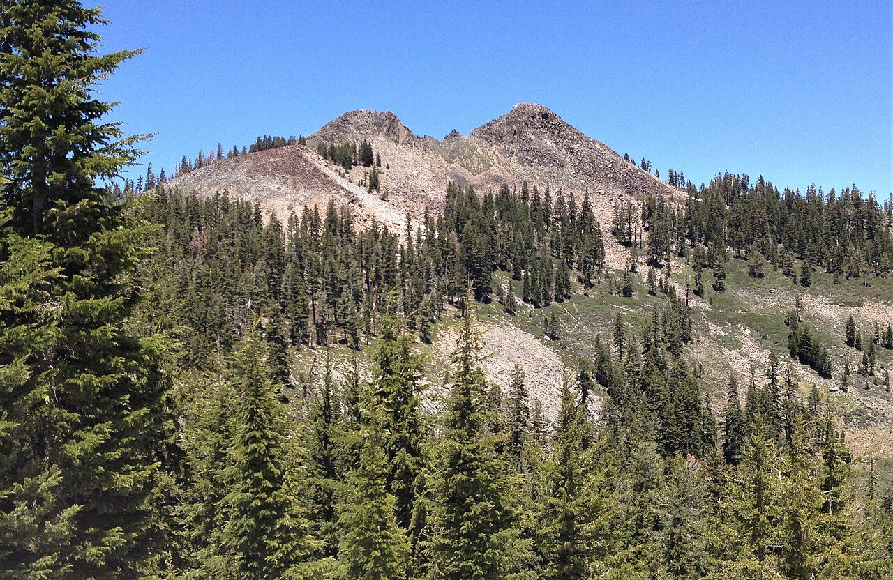
Photo: Tim Berger · Wikimedia Commons, CC BY 2.0 Twin Peaks
Twin volcanic knobs rise above the trail along the eastern rampart of the Sierra, the last real summit of the circuit. To the east the lake glitters one final time from height; to the west drop the deep canyons of the American River. The end is close now, with Tahoe City waiting just down the long north ridge.
-
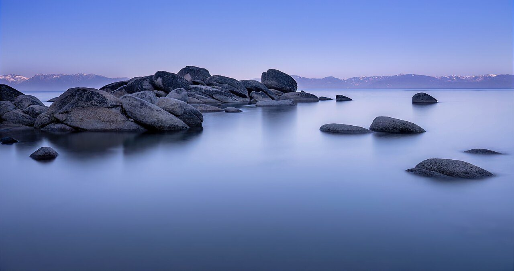
Photo: John D. · Wikimedia Commons, CC BY 2.0 Tahoe City
The Truckee River appears again, and Fanny Bridge, and the same water that set everything in motion. Two hundred and sixty-five kilometers close the ring, a full lap of a lake 1,645 feet deep, the second-deepest in the United States, past more ridgelines and high summits than any list can hold. Below the planks, trout hang unmoved in the current, indifferent to the circle just completed.
Walking the Tahoe Rim Trail
Your watch is already counting these steps. Watch Walks spends them on the Tahoe Rim Trail, all 265 km of it, and hands you each landmark as you reach it. There's no route recording, no account and no ads. The Inca Trail is free; this one is a one-time purchase with no subscription.
Other trails in North America
- Appalachian Trail 3,536 km · USA
- Pacific Crest Trail 4,265 km · USA
- Route 66 3,940 km · USA
- John Muir Trail 340 km · USA (California)
- Wonderland Trail 150 km · USA (Washington)
- The Long Trail 439 km · USA (Vermont)